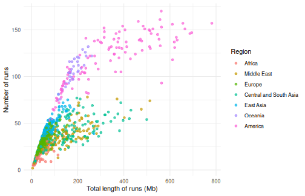
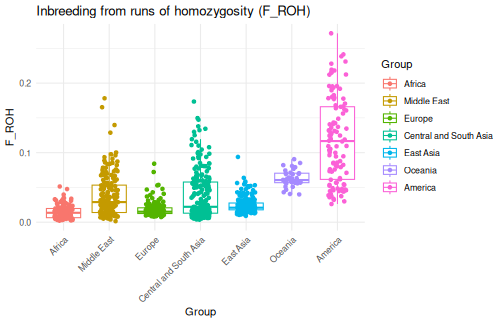
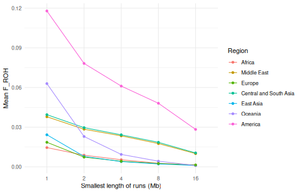
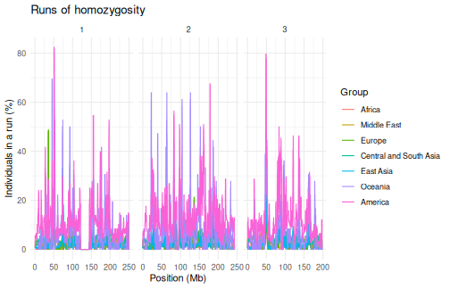
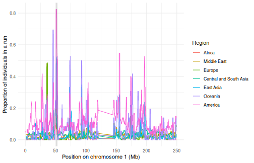

Runs of homozygosity (ROH) are stretches of the genome where both copies of a chromosome are identical, because the individual inherited them from a common ancestor of its parents. Their number and length tell us about the demographic history of populations: many short runs point to a small population in the distant past, while long runs point to recent inbreeding, as the runs inherited from recent ancestors have had little time to be broken up by recombination. Regions that are in runs in most individuals of a population (ROH islands) can point to selection.
tidypopgen finds runs of homozygosity with the
sliding-window algorithm of PLINK 1.9 (plink --homozyg),
with the same parameters and defaults, and gives the same runs. In this
article, we look at the runs of homozygosity of the Human Genome
Diversity Project (HGDP): 1,043 individuals from 51 populations, typed
at about 650k loci. We also time each step, on a laptop with a Intel(R)
Core(TM) i7-10510U CPU @ 1.80GHz CPU.
library(tidypopgen)
#> Loading required package: dplyr
#>
#> Attaching package: 'dplyr'
#> The following objects are masked from 'package:stats':
#>
#> filter, lag
#> The following objects are masked from 'package:base':
#>
#> intersect, setdiff, setequal, union
#> Loading required package: tibble
library(ggplot2)
n_cores <- 4The data
We download the HGDP files (see the HGDP benchmark for the code) into
data/hgdp/, and read the bed file into a
gen_tibble:
hgdp <- gen_tibble("./data/hgdp/hgdp650.qc.hg19.bed",
quiet = TRUE,
backingfile = tempfile("hgdp_")
)We add the population and region of each individual, from the metadata file of the HGDP. We use seven broad regions, which we group the individuals by:
meta_info <- readr::read_tsv("./data/hgdp/hgdp650_id_pop.txt",
show_col_types = FALSE
)
regions <- c(
Africa = "Africa", Middle_Est = "Middle East", Europe = "Europe",
Central_South_Asia = "Central and South Asia", Est_Asia = "East Asia",
Oceania = "Oceania", America = "America"
)
hgdp <- hgdp %>%
mutate(
population = meta_info$population[match(id, meta_info$Id)],
region = factor(
regions[meta_info$Pop7Groups[match(id, meta_info$Id)]],
levels = regions
)
) %>%
group_by(region)
hgdp
#> # A gen_tibble: 643733 loci
#> # A tibble: 1,043 × 5
#> # Groups: region [7]
#> id phenotype genotypes population region
#> <chr> <fct> <vctr_SNP> <chr> <fct>
#> 1 HGDP00448 control [2,0,...] Biaka_Pygmies Africa
#> 2 HGDP00479 control [1,0,...] Biaka_Pygmies Africa
#> 3 HGDP00985 control [0,0,...] Biaka_Pygmies Africa
#> 4 HGDP01094 control [1,0,...] Biaka_Pygmies Africa
#> 5 HGDP00982 control [2,0,...] Mbuti_Pygmies Africa
#> 6 HGDP00911 control [1,0,...] Mandenka Africa
#> 7 HGDP01202 control [2,0,...] Mandenka Africa
#> 8 HGDP00927 control [2,0,...] Yoruba Africa
#> 9 HGDP00461 control [2,0,...] Biaka_Pygmies Africa
#> 10 HGDP00451 control [2,0,...] Biaka_Pygmies Africa
#> # ℹ 1,033 more rowsFinding runs of homozygosity
windows_indiv_roh() slides windows of 50 loci along each
chromosome, and finds the runs of at least 1,000 kb and 100 loci (the
defaults of PLINK; see ?windows_indiv_roh for all the
parameters). All individuals are analysed in a single pass over the
genotypes, on one or more cores:
hgdp_roh <- windows_indiv_roh(hgdp, n_cores = 1)
hgdp_roh <- windows_indiv_roh(hgdp, n_cores = n_cores)On one core, this takes 3.8 s, and on 4 cores, 1.3 s. We get a tibble with one row per run:
hgdp_roh
#> # A tibble: 45,910 × 11
#> group id chromosome start end length_bp n_loci first_locus last_locus
#> * <fct> <chr> <fct> <int> <int> <int> <int> <int> <int>
#> 1 Africa HGDP… 1 8.94e7 9.04e7 1006777 229 19393 19621
#> 2 Africa HGDP… 1 2.22e8 2.27e8 4360744 644 42833 43476
#> 3 Africa HGDP… 2 1.98e8 2.00e8 1684488 294 92642 92935
#> 4 Africa HGDP… 3 6.24e7 6.35e7 1125118 466 119595 120060
#> 5 Africa HGDP… 3 1.10e8 1.12e8 1547055 318 128847 129164
#> 6 Africa HGDP… 5 8.88e7 9.02e7 1372686 300 207346 207645
#> 7 Africa HGDP… 5 1.30e8 1.31e8 1438840 139 216457 216595
#> 8 Africa HGDP… 6 7.13e7 7.25e7 1184248 292 247357 247648
#> 9 Africa HGDP… 6 8.24e7 8.78e7 5450986 1090 249741 250830
#> 10 Africa HGDP… 6 8.85e7 9.00e7 1519593 416 250945 251360
#> # ℹ 45,900 more rows
#> # ℹ 2 more variables: n_het <int>, n_missing <int>Comparison with PLINK
plink_out <- tempfile("plink_roh")
system2(plink,
c("--bfile", "./data/hgdp/hgdp650.qc.hg19", "--homozyg", "--out", plink_out),
stdout = FALSE
)
plink_roh <- read.table(paste0(plink_out, ".hom"), header = TRUE)
nrow(plink_roh)
#> [1] 45910
# the same runs as PLINK
all(hgdp_roh$id == plink_roh$IID & hgdp_roh$start == plink_roh$POS1 &
hgdp_roh$end == plink_roh$POS2 & hgdp_roh$n_loci == plink_roh$NSNP)
#> [1] TRUEPLINK, run on the same machine with the default parameters, finds the
same 45,910 runs in 3.6 s (reading the bed file from disk, and writing
the runs to a file). So windows_indiv_roh() is about as
fast as PLINK on one core, and faster on several cores; and the runs are
already in R, ready to be analysed.
Number and length of runs
A classic way to look at runs of homozygosity is to plot, for each individual, the number of runs against their total length. Individuals of populations that have been small for a long time have many short runs, which add up to a moderate total length; individuals whose parents are related have a few very long runs, which add up to a large total length.
roh_per_indiv <- hgdp_roh %>%
dplyr::summarise(
n_runs = dplyr::n(),
total_mb = sum(length_bp) / 1e6,
.by = c(group, id)
)
ggplot(roh_per_indiv, aes(x = total_mb, y = n_runs, colour = group)) +
geom_point(alpha = 0.7) +
labs(
x = "Total length of runs (Mb)", y = "Number of runs",
colour = "Region"
) +
theme_minimal()
African individuals have the fewest runs (18 on average), and the smallest total length, as African populations have been large for a long time. The number of runs increases with the distance from Africa, as populations went through bottlenecks while they spread out of Africa, and is largest in Oceania and the Americas (more than 100 on average). Many Native Americans, from small and isolated populations, have more than 200 Mb in runs. In the Middle East and in Central and South Asia, some individuals have a large total length from fewer, longer runs: their parents are related, as consanguineous marriages are common in some of these populations.
Inbreeding from runs of homozygosity
The inbreeding coefficient F_ROH is the proportion of the genome in
runs of homozygosity. gt_roh_froh() computes it for each
individual (with 0 for those with no runs):
hgdp_froh <- gt_roh_froh(hgdp_roh)
hgdp_froh
#> # A tibble: 1,043 × 4
#> group id length_bp froh
#> <fct> <chr> <dbl> <dbl>
#> 1 Africa HGDP00448 45652154 0.0159
#> 2 Africa HGDP00479 99914935 0.0347
#> 3 Africa HGDP00985 73365063 0.0255
#> 4 Africa HGDP01094 52479955 0.0182
#> 5 Africa HGDP00982 39329170 0.0137
#> 6 Africa HGDP00911 114095091 0.0396
#> 7 Africa HGDP01202 17070392 0.00593
#> 8 Africa HGDP00927 59887694 0.0208
#> 9 Africa HGDP00461 49686281 0.0173
#> 10 Africa HGDP00451 90687939 0.0315
#> # ℹ 1,033 more rowsautoplot() shows F_ROH by group:
autoplot(hgdp_roh, type = "froh") +
theme(axis.text.x = element_text(angle = 45, hjust = 1))
The populations with the highest mean F_ROH:
hgdp_froh %>%
dplyr::mutate(population = hgdp$population[match(id, hgdp$id)]) %>%
dplyr::summarise(mean_froh = mean(froh), .by = c(group, population)) %>%
dplyr::slice_max(mean_froh, n = 8)
#> # A tibble: 8 × 3
#> group population mean_froh
#> <fct> <chr> <dbl>
#> 1 America Surui 0.193
#> 2 America Karitiana 0.146
#> 3 America Pima 0.112
#> 4 America Colombians 0.0937
#> 5 Oceania Papuan 0.0695
#> 6 Central and South Asia Balochi 0.0598
#> 7 Oceania NAN_Melanesian 0.0571
#> 8 Central and South Asia Kalash 0.0556Recent and ancient inbreeding
Runs are broken up by recombination over the generations, so the length of a run tells us how long ago the common ancestor lived: runs of more than 8 Mb come from ancestors a few generations back, while runs of 1 to 2 Mb come from ancestors dozens of generations back. F_ROH computed from the runs of at least a given length separates recent from ancient inbreeding:
froh_classes <- gt_roh_froh(hgdp_roh, min_length_mb = c(1, 2, 4, 8, 16))
froh_classes %>%
dplyr::summarise(mean_froh = mean(froh), .by = c(group, min_length_mb)) %>%
ggplot(aes(x = factor(min_length_mb), y = mean_froh, colour = group,
group = group)) +
geom_line() +
geom_point() +
labs(
x = "Smallest length of runs (Mb)", y = "Mean F_ROH",
colour = "Region"
) +
theme_minimal()
In Oceania and East Asia, F_ROH drops quickly when only long runs are kept: less than 10% of it comes from runs longer than 8 Mb, so it mostly reflects small populations in the past. In the Middle East and in Central and South Asia, almost half of F_ROH comes from runs longer than 8 Mb, from recent inbreeding. In the Americas, F_ROH is high for runs of all lengths: these populations were both small in the past and isolated recently.
Where are the runs?
autoplot() shows the runs along each chromosome. With so
many individuals, the proportion of the individuals of each group that
are in a run (type = "coverage") is easier to read than the
runs themselves:

ROH islands
gt_roh_loci() counts, at each locus, the individuals of
each group that are in a run. gt_roh_islands() then finds
the regions where at least a given proportion of the individuals of a
group are in a run:
hgdp_islands <- gt_roh_islands(hgdp_roh, show_loci(hgdp), threshold = 0.5)
hgdp_islands %>%
dplyr::arrange(dplyr::desc(max_prop))
#> # A tibble: 57 × 10
#> group chromosome start end length_bp n_loci first_locus last_locus
#> <fct> <fct> <int> <int> <int> <int> <int> <int>
#> 1 America 1 50664611 52673307 2008697 213 10202 10414
#> 2 Oceania 6 26383386 29542947 3159562 595 237320 237914
#> 3 Oceania 22 40781162 42762024 1980863 283 640431 640713
#> 4 America 3 48197614 50144951 1947338 131 116308 116438
#> 5 Oceania 8 99383408 101150355 1766948 167 332662 332828
#> 6 America 20 32764183 34865240 2101058 220 616116 616335
#> 7 Oceania 11 30871743 32027444 1155702 138 418774 418911
#> 8 America 6 48406425 49880099 1473675 256 243385 243640
#> 9 America 22 40726762 42237769 1511008 187 640424 640610
#> 10 Oceania 1 45363887 46633874 1269988 125 9351 9475
#> # ℹ 47 more rows
#> # ℹ 2 more variables: max_prop <dbl>, mean_prop <dbl>We can look at the proportion of individuals in a run along the chromosome of the most frequent island:
top_island <- hgdp_islands %>% dplyr::slice_max(max_prop, n = 1)
roh_loci <- gt_roh_loci(hgdp_roh, show_loci(hgdp))
roh_loci %>%
dplyr::filter(chromosome == top_island$chromosome) %>%
ggplot(aes(x = position / 1e6, y = prop_roh, colour = group)) +
geom_line() +
annotate("rect",
xmin = top_island$start / 1e6, xmax = top_island$end / 1e6,
ymin = -Inf, ymax = Inf, alpha = 0.2
) +
labs(
x = paste("Position on chromosome", top_island$chromosome, "(Mb)"),
y = "Proportion of individuals in a run", colour = "Region"
) +
theme_minimal()
Islands found from a few hundred thousand SNPs should be interpreted with care: regions with few SNPs, or with low recombination, are more likely to be in runs, whatever selection did.
Timings
| Step | Time (s) |
|---|---|
Read the bed file (gen_tibble()) |
3.33 |
Find the runs (windows_indiv_roh(), 1
core) |
3.77 |
Find the runs (windows_indiv_roh(), 4
cores) |
1.29 |
PLINK --homozyg (1 thread) |
3.55 |
F_ROH (gt_roh_froh()) |
0.03 |
ROH islands (gt_roh_islands()) |
2.43 |